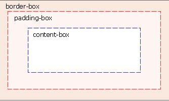

2.3.3.1. 背景
CSS3 Background 中包含几个新的背景属性，提供更大背景元素控制。
主要是2个背景属性：
- background-size
- background-origin
您还将学习如何使用多重背景图像。
2.3.3.1.1. background-size
该属性规定背景图片的尺寸。
在 CSS3 之前，背景图片的尺寸是由图片的实际尺寸决定的。在 CSS3 中，可以规定背景图片的尺寸，这就允许我们在不同的环境中重复使用背景图片。
您能够以像素或百分比规定尺寸。如果以百分比规定尺寸，那么尺寸相对于父元素的宽度和高度。
.background-size {
background: url(images/wl_white.png);
background-size: 100px 40px;
-moz-background-size: 100px 40px; /* Firefox 3.6 */
-webkit-background-size: 100px 40px;
background-repeat: no-repeat;
padding-top: 40px;
}
2.3.3.1.2. background-origin
该属性指定了背景图像的位置区域。
content-box, padding-box,和 border-box 区域内可以放置背景图像。

.background-origin-border {
width: 250px;
height: 250px;
border: 1px dotted green;
padding: 25px;
background-image: url('images/border.png');
background-repeat: no-repeat;
background-position: left;
background-origin: border-box;
}
.background-origin-content {
width: 250px;
height: 250px;
border: 1px dotted green;
padding: 25px;
background-image: url('images/border.png');
background-repeat: no-repeat;
background-position: left;
background-origin: content-box;
}
2.3.3.1.3. 源码
本文中所用例子源码参见
https://github.com/waylau/css3-tutorial 中 samples 目录下的 background_size.html、background_origin.html